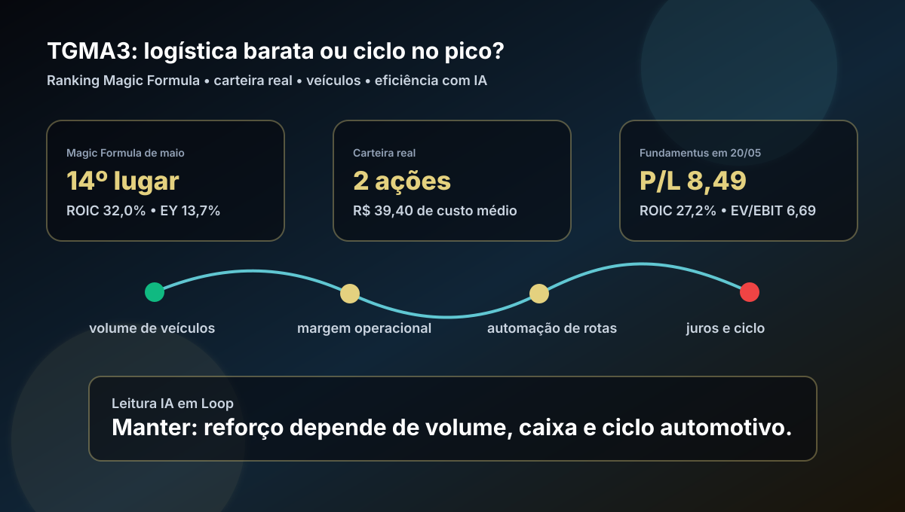

20/05: TGMA3, logística automotiva e IA no teste do ciclo
Depois de educação digital, a leitura diária vai para logística automotiva. TGMA3 aparece bem posicionada na Magic Formula e na carteira real, mas a pergunta central não é se a empresa é eficiente: é se o preço já remunera o risco de ciclo, volume de veículos e margem em um negócio dependente da indústria automotiva.

Leitura visual: TGMA3 combina qualidade operacional e preço ainda razoável, mas depende de volume automotivo, disciplina de custos e uso prático de dados/IA para proteger margem.
O sinal do dia
TGMA3 foi escolhida para diversificar a sequência recente de análises. O blog já passou por seguros, construção, saúde, autopeças, tecnologia/serviços e educação; logística automotiva adiciona outra camada da cadeia real da economia sem repetir ticker dos últimos dias.
No ranking Magic Formula de maio do IA em Loop, TGMA3 aparece em 14º lugar, setor Logística, com ROIC de 32,0%, earnings yield de 13,7%, EV/EBIT de 7,29 e score 54. Na leitura do Fundamentus feita em 20/05, a ação aparecia a R$ 30,60, com P/L de 8,49, P/VP de 2,22, ROIC de 27,2%, ROE de 26,1%, margem EBIT de 13,1% e EV/EBIT de 6,69.
Resposta curta: TGMA3 parece uma boa empresa cíclica a preço aceitável, não uma barganha óbvia. O ranking coloca o papel no radar e a carteira real já tem exposição; o reforço só faz sentido se volume, caixa e margem seguirem saudáveis mesmo com juros altos e oscilações da produção de veículos.
Por que TGMA3 hoje?
A carteira real da Magic Formula possui 2 ações de TGMA3, com custo médio de R$ 39,40, valor investido de R$ 78,80 e peso aproximado de 10,4%. Como a cotação consultada estava abaixo desse custo, o ativo merece revisão objetiva: queda de preço pode ser oportunidade, mas também pode ser recado sobre ciclo.
O pano de fundo é misto. Leituras públicas recentes apontam financiamento de veículos crescendo em abril, produção de veículos em março no melhor nível desde 2019 e projeção de alta da produção em 2026. Do outro lado, também há manchetes sobre queda em caminhões, juros ainda restritivos e balanços que mostram sensibilidade da cadeia automotiva. Para TGMA3, isso significa que o dado de volume importa tanto quanto o múltiplo.
| Item | Leitura verificada | Implicação |
|---|---|---|
| Ranking | 14º na Magic Formula de maio | Boa combinação de retorno sobre capital e preço, mas já abaixo dos nomes mais baratos |
| Carteira real | 2 ações; R$ 78,80; cerca de 10,4% da carteira Magic Formula | Exposição relevante para o tamanho da carteira, exigindo disciplina antes de reforçar |
| Valuation | P/L 8,49; EV/EBIT 6,69; P/VP 2,22 | Preço razoável para qualidade, mas não “de graça” |
| Rentabilidade | ROIC 32,0% no ranking; 27,2% no Fundamentus; ROE 26,1% | Qualidade operacional acima da média, desde que o ciclo não normalize para baixo |
| Setor | Logística de veículos e cadeia automotiva | Volume, mix, contrato, combustível, mão de obra e montadoras definem a margem |
A tese: logística eficiente ou dependência demais do ciclo?
TGMA3 é uma tese operacional. Diferente de uma plataforma digital pura, a vantagem aparece em rede logística, escala, relacionamento com montadoras, ocupação de frota, roteirização, produtividade e controle de custos. Quando há volume, a alavancagem operacional ajuda; quando o ciclo esfria, a mesma estrutura pode pressionar margem.
A pergunta prática é: o desconto atual compensa o risco do ciclo automotivo? A leitura atual do IA em Loop é: compensa para manter posição e acompanhar de perto; ainda não justifica aumentar muito o peso. A empresa tem retorno sobre capital forte e múltiplos aceitáveis, mas a carteira já carrega exposição relevante e o setor depende de variáveis fora do controle da companhia.
Pontos positivos
ROIC elevado, ROE forte, múltiplo de lucro moderado, presença no ranking e histórico de geração operacional em um nicho logístico especializado.
Riscos
Queda de produção ou venda de veículos, pressão de custos, concentração em clientes automotivos, sensibilidade a juros e risco de margem se volumes recuarem.
Onde a IA ajuda
Previsão de demanda por região, roteirização, manutenção preditiva, alocação de frota, leitura de gargalos, monitoramento de combustível e otimização de pátios.
Onde a IA engana
Se o volume de veículos cair, algoritmo bom não cria carga. IA ajuda a defender margem, mas não elimina dependência do ciclo automotivo.
Compra, venda ou espera?
Pelos critérios do IA em Loop, TGMA3 fica como manutenção com viés de espera disciplinada. Há qualidade suficiente para continuar no radar, mas o peso já é relevante na carteira real e o preço, embora menor que o custo médio, não elimina risco de ciclo.
- Gatilho de compra: volume de veículos sustentado, margem EBIT preservada, geração de caixa consistente, contratos renovados em boas condições e preço ainda abaixo do custo médio sem deterioração operacional.
- Gatilho de espera: múltiplos razoáveis, mas sem confirmação de volume, lucro e caixa nos próximos trimestres.
- Gatilho de venda/redução: queda persistente de volumes, compressão de margem, aumento de endividamento, perda de contratos relevantes ou sinais de que o lucro atual era pico de ciclo.
O que isso muda na carteira
Na carteira real, TGMA3 ajuda a tirar a Magic Formula de uma concentração excessiva em educação, seguros e commodities. O problema é que logística automotiva conversa com o mesmo ciclo industrial de autopeças e montadoras: se a carteira já tem LEVE3, POMO3/POMO4 ou outros nomes ligados a veículos, reforçar TGMA3 aumenta o risco temático.
A disciplina prática é comparar TGMA3 com POMO3, POMO4 e LEVE3 antes de qualquer nova compra. Se todas sobem pelo mesmo ciclo, a diversificação é menor do que parece. Se TGMA3 entregar margem e caixa mesmo com ciclo apenas moderado, aí a qualidade operacional ganha peso.
Checklist antes de agir
- Conferir o próximo release separando receita por volume, margem, caixa e comentários sobre montadoras.
- Acompanhar produção, emplacamentos e financiamento de veículos, principalmente se juros continuarem altos.
- Verificar se ganho de eficiência vem de produtividade recorrente ou de efeito pontual de mix/contratos.
- Comparar TGMA3 com autopeças e carrocerias para não dobrar exposição ao mesmo ciclo.
- Usar R$ 30,60 apenas como fotografia de consulta; preço de execução deve ser validado no home broker/B3.